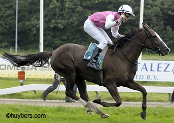
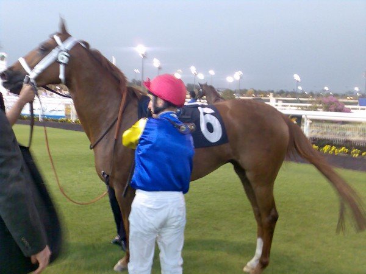
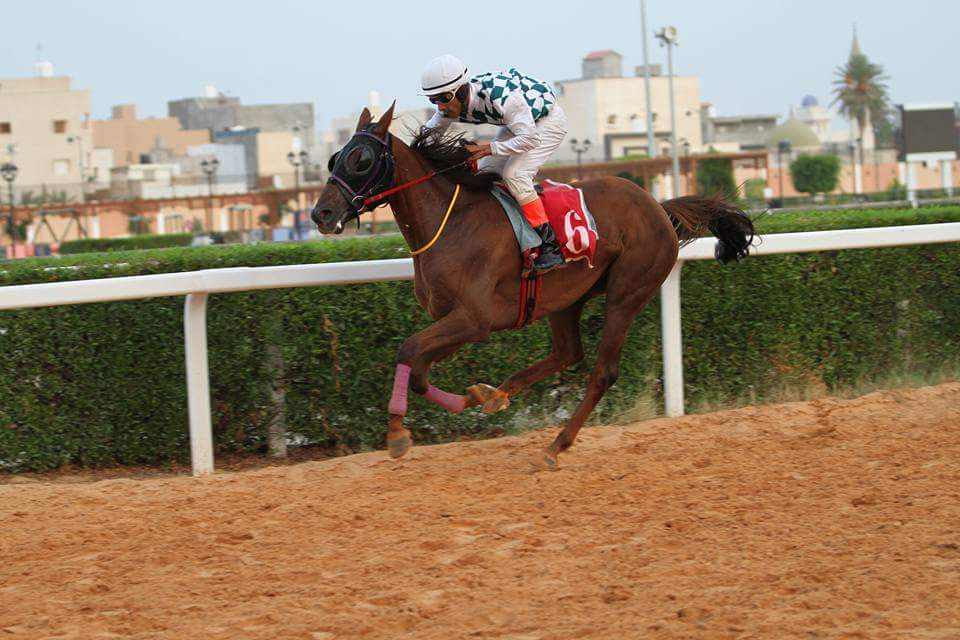
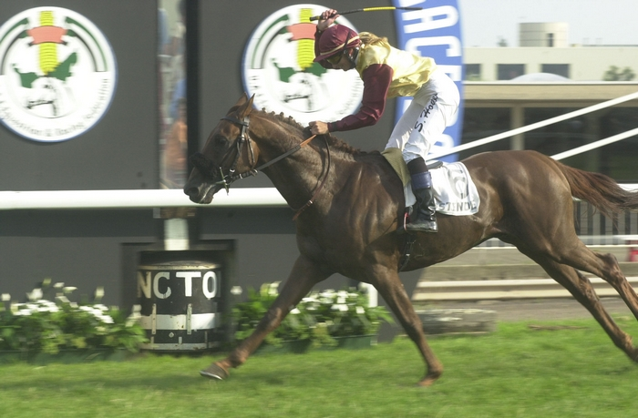

－ Chalwa du Breuil
－2015 : 1e à Castéra-Verduzan, Prix Dragonne 1700 m
－5/9/2015 : 5e Gr.3 PA La Teste Buch
－21/4/2017: 3e HH Sheikha Fatima Bint Mubarak Al Nahyan Ladies Championship, 1.600 m Premium Toulouse
－23/7/2017: 1e HH Sheikha Fatima Bint Mubarak Al Nahyan Ladies World Cup, Gr.3 PA 1.800 m Duindigt
－19/11/2017: 4° Grand Prix SAR PH Moulay El Hassan, Gr3 PA 1900 m Casa-Anfa Maroc
－Baume du Breuil 7|1|6
－2014: 3e à Bordeaux-le-Bouscat, prix Etienne Camentron, 1.900 m
－2015 : 1e Pau - Prix Magicienne 1950m
－24/7/2016 : 4e, 2400 m Handicap, Newbury (GB)
－3/6/2017: 5° Doncaster (GB) Royal Cavalry of Oman Premier Handicap Stakes
－ Wanaa du Breuil 5|0|2
－2013 : 3° à Beaumont-de-L.
－12 juin 2016 : 4e Duindigt, Listed PA 2150 m
－ Vulcain du Clos (par Monsieur Al Maury et Jamaa du Breuil) 31|6|16
－2012 : 1er à Bordeaux Bouscat, 1900 m
－2012 : 2e à Beaumont, 1800 m
－2012 : 4e à Mont-de-Marsan, 1400 m
－2013 : 2e à Toulouse, Prix Carthage-H., Gr. 2 PA 2000 m
－2013 : 3e à Toulouse, 2200 m
－2013 : 3e à La Teste Buch, Gr. 3 PA 1900 m
－2013 : 3e à Bordeaux Bouscat, Coupe Sud-Ouest, Gr. 3 PA 1900 m
－2013 : 5e à Longchamp, Gr. 2 PA, 2000 m
－2014 : 1er à Ostende (B), Listed PA, 1600 m
－2014 : 1er à Bordeaux-Bouscat, 1600 m
－2014 : 4e à Bordeaux-Bouscat, 1400 m
－2014 : 5e à Pau, PSF 1950 m
－2014 : 1er à Ostende, President UAE Cup, listed PA, 1600 m,
－2014 : 2e à Casablanca, President UAE Cup, 1750 m
－2014: 2e à Veliefendi, President UAE Cup Malazgirt Trophy, Gr.1 PA, 1600 m,
－2015 : 2e à Casablanca, Gr.3 PA, 1900 m
－2015 : 2e à Duindigt, Listed PA 1800m,
－2015: 2e à Dubaï International Arabian Stakes, 1800 m
－2015: 4e à Meydan, Al Maktoum Challenge Gr.1 PA, 2000 m,
－2016 : 1er à Rome (Capanelle), Dubaï int. Arabian Race, Listed PA, 1900 m
－2016 : 3e à Veliefendi, Gr.1 PA, 1600 m
－2016 : 3e à Casablanca, 2100 m
－2016 : 3e à Veliefendi, Int. IFAHR Trophy, Gr.2 PA, 2100 m
－2016 : 4e à Duindigt, Gr.3 PA 1900m
－Dubai International Arabian Race (L PA), 8/5/2016, 1900 m, Capannelle Rom
－2015 : Vulcain du Clos 4° Al Maktoum Challenge Gr.1 2000 m
－Vainqueur le 4 août 2014 à Ostende (B), 1600 m L PA
－2014 : victoire à Bordeaux-Bouscat
－ Vega du Clos
－23/4/2016: qualifiée CEI* 80 km à Uzès: pos 31 (16,32 km moyenne générale).
－3ème boucle: moyenne 16,36, temps de récup 2.31min; cardiaque final 52.
－18/6/2016: Costaros : CEI** 120 km FTQ
－24/7/2016: Pisa, San Rossore CEI** 120 km pos 22, (recovery) cardio : 48
－14/10/2016: Fontainebleau CEI2** 120 km, pos. 6, recov.: 01'37, 19.5 km/h
－02/06/2017: San Vito al Tagliamento (It), CEI*** 160 km, pos. 4, 18.4 km/h
－17/08/2017 Bruxelles (B), Championnats d'Europe CH-EU CEI4* 160 km, position 9
－excellents cardiaque/temps récup (1'50), vitesse moyenne 19 km; score 8:35
－12/9/2018: Tryon NC, WEG-E
－18/5/2019: 1e Rambouillet, CEI1* 80
－14/6/2019: 1e Buch, CEI2* 120
－ Tequila du Breuil (par Dormane et Jamaa du Breuil) 13|2|8
－ Serouda du Breuil (par Dormane et Jamaa du Breuil)
－20|4|8 (Scandinavian Arabian Derby 2010) (Suède)
－Prix H.H. Sheika Fatima Bint Mubarak Ladies World Championship (IFAHR) 4 ans, 10 juillet 2012 à Stockholm/Täby;
－3e Gr.1 PA Newbury, 5e Gr.1 PA Newbury
－ Rahaf (ex Ouarka du Breuil) par Kesberoy x Basta - 12|2|7
－ Drifa du Breuil (No Risk al Maury x Tequila du Breuil)
－2016 à 2018 : plusieurs victoires à Abe Seeta (Libye)
－ Ibn Al Ameed (General x Seffa du Breuil) 5|0|5
Propriétaire : Ch. Abd. Bin Khalifa Al Thani
－2017 : 2e à La Teste Buch, Prix Arca, 1600 m
－2017 : 2e à Doha, Purebred Arabian Plate, 1600 m
－2019 : 3e à Doha, Purebred Arabian Plate (Div 2), 2000 m
－ Ikmal du Breuil (Djelfor x Basta) : 27|2|11
－2000 : 1e Duindigt, 1800 m
－2000 : 1e Duindigt, 1300 m
－Ikmal
－ Kif Poyaudin 8|2|5
－2002: gagnant la HH. SH. Zayed Al Nahyan Int. Stayers Cup, Oostende (B), 2002 (Gr.2 PA) 8|2|5
－ Jamaa du Breuil par Djouras Tu : 17|2|12
－2002 : Gagnante Prix UAE Equestrian & Racing Fed. Open Sprint (Gr.3 PA), à Ostende (B)
－2002 : Cheval de l'année 2002 en Belgique. Poulinière au Haras.
Makfoul du breuil 43|12|14
－Gagnant Coupe d'Europe, Chantilly 2004 Gr.1 PA 43|12|14
－Gagnant Prix du Président des E.A.U, Newmarket 2004, Gr.1 PA
－Exporté aux E.A.U.
－ Ezzahra du Breuil 5|1|2
－2018: 1e à Duindigt, 1900 m
－2018: 2e à Duindigt, 1800 m
－2018: 4e à Newbury, 2000 m
－Gohar du Breuil 6|0|2
－2019 : 3e à La Teste Buch, Prix Akbar, 1900 m
－2019 : 4e à Toulouse, Prix Etienne Camentron, 2100 m
－ Faruq du Breuil
－2019 : à ...., qualifié 20 km CEN
－ Gadab (Amer x Seffa du Breuil) 15|1|8
Propriétaire : Umm Qarn
－2016 : 1e à Doha, Purebred Arabian Maiden Plate, 1600 m
－2017 : 3e à Doha, Purebred Arabian Handicap, 1700 m
－2018 : 4e à Doha, Purebred Arabian Novice Cup, 1700 m
－ Muwahhab (Nizam x Seffa du Breuil) 8|0|1
Propriétaire : Mr. Salem Fadgam Al Hajrit & Sons
－2018 : 3e à Doha, Purebred Arabian Maiden Plate, 1900 m
－ Garraffah (Tabarak x Seffa du Breuil) 14|2|2
Propriétaire : Mr. Jassim Bin Ali M A Al-Attiyah
－2018 : 2° à Toulouse, Prix Norniz, 1600 m
－2019 : 1e à Doha, Purebred Arabian Maiden Plate, 1900 m
－2019 : 1e à Doha, Purebred Arabian Plate (4 years old), 1700 m
－ Lillij Ann (Makfoul du Breuil x Ludmillah par Dormane) 17|2|9
－2018 : 2° à Toulouse, Prix Norniz, 1600
－2011: 1e à Hoppegarten, 2000 m
－2012: 1e à Hambourg Horn, 1800 m
－2012 : 5e Gr.3 Baden Baden / 6e Gr.2 Longchamp (Premium)
－ Seffa du Breuil
－20/10/2018 : 2e à Tartas CEI1* 90 km (VL, 19,5 km), cavalier Piron Aurelien